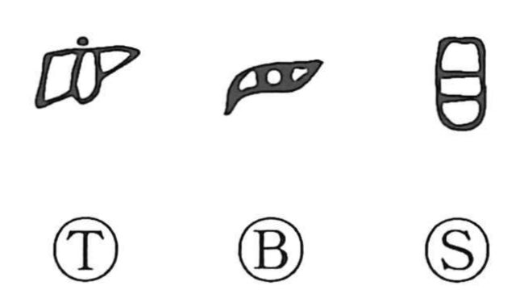

目

Kun: me, ma, miru, mekubase suru | On: moku, boku
eye ・ to look ・ vision
Explanation
目 pictures an eye. The earliest forms are broad and horizontal, with the pupil marked inside; the modern form turns this into a tall, upright shape. As a verb, 目 means to look at or direct the eyes toward something.
The eyes and eyebrows are the conspicuous features of a face, so 目 also came to identify what stands out as essential or serves as a mark for recognition. From this develop headings, principal points, and divisions under which things are arranged. A heading makes a section recognizable, much as the eye gives the face its most noticeable feature.